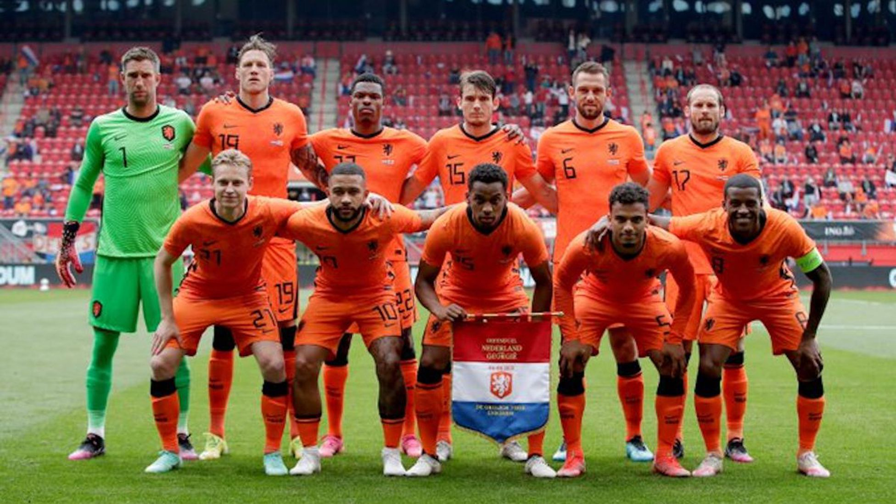

Ranking FIFA : 8° (octubre 2022).
¿Cómo se clasificó al Mundial? Ganó el Grupo G de las Eliminatorias europeas.
Rendimiento en 2021 (G-E-P): 11-3-2 (44 GF, 14 GC, +30).
Rendimiento en 2022 : 6-2-0 (19 GF, 9 GC, +10)
Jasper Cillessen; Matthijs de Ligt, Virgil van Dijk, Nathan Aké; Denzel Dumfries, Steven Berghuis, Frenkie de Jong, Davy Klaasen, Daley Blind; Steven Bergwijn, Memphis Depay.
Nacionalidad: neerlandés.
Edad: 71 años.
Contratado: 4 de agosto de 2021.
Récord en el cargo (G-E-P): 11-4-0 en la etapa actual.
Títulos en el cargo: Ninguno.
Victoria más notable: 6-1 sobre Turquía, Eliminatorias europeas.
1930 Uruguay -
1934 Italia 9°
1938 Francia 14°
1950 Brasil -
1954 Suiza -
1958 Suecia -
1962 Chile -
1966 Inglaterra -
1970 México -
1974 Alemania 2°
1978 Argentina 2°
1982 España -
1986 México -
1990 Italia 15°
1994 Estados Unidos 7°
1998 Francia 4°
2002 Corea y Japón -
2006 Alemania 11°
2010 Sudáfrica 2°
2014 Brasil 3°
2018 Rusia -
